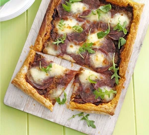

Puff Pizza Tart

This simple recipe only calls for four ingediants!
Ingrediants
- 375g sheet ready-rolled puff pastry
- 5 tbsp red pesto
- 70g sliced salami
- 125g mozzarella, torn into pieces
- olive oil for drizzling
Steps
- Heat oven to 425 degrees F.
- Unroll pastry onto a lage backing sheet and prick all over with a fork.
Spread pesto, leaving a border of roughly 1 inch around the edge.
Layer on the salami, top with torn mozzarella and some seasoning,
then bake for 15-20minutes until the pastry is golden, risen and crisp.
- Drizzle with a little extra virgin olive oil. Slice and serve.